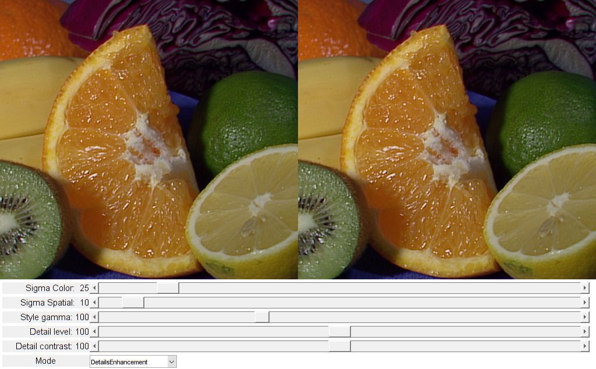

Filtering Demo
This program demonstrates Domain Transform filtering using cv.DTFilter.
Sources:
function varargout = dtFilter_demo_gui(im) % Load an image if nargin < 1 src = imread(fullfile(mexopencv.root(),'test','fruits.jpg')); elseif ischar(im) src = imread(im); else src = im; end % make sure we start with a color image if ndims(src) ~= 3 src = cv.cvtColor(src, 'GRAY2RGB'); end % speedup filtering cv.Utils.setNumThreads(cv.Utils.getNumberOfCPUs()); % create the UI h = buildGUI(src); if nargout > 0, varargout{1} = h; end end function onChange(~,~,h) %ONCHANGE Event handler for UI controls % retrieve current values from UI controls opts.contrastBase = round(get(h.slid(1), 'Value')); opts.detailsLevel = round(get(h.slid(2), 'Value')); opts.edgesGamma = round(get(h.slid(3), 'Value')); opts.sigmaSpatial = round(get(h.slid(4), 'Value')); opts.sigmaColor = round(get(h.slid(5), 'Value')); set(h.txt(1), 'String',sprintf('Detail contrast: %3d',opts.contrastBase)); set(h.txt(2), 'String',sprintf('Detail level: %3d', opts.detailsLevel)); set(h.txt(3), 'String',sprintf('Style gamma: %3d', opts.edgesGamma)); set(h.txt(4), 'String',sprintf('Sigma Spatial: %3d', opts.sigmaSpatial)); set(h.txt(5), 'String',sprintf('Sigma Color: %3d', opts.sigmaColor)); drawnow % apply filtering operation filterIdx = get(h.pop, 'Value'); filtersOp = {@filterDetailsEnhancement, @filterStylizing, @filterBlurring, @filterDoNothing}; dst = feval(filtersOp{filterIdx}, h.src, opts); % show result set(h.img, 'CData',dst) drawnow end function h = buildGUI(img) %BUILDGUI Creates the UI sz = size(img); sz(2) = max(sz(2), 200); % minimum figure width % parameters contrastBase = 100; % for Details Enhancement mode detailsLevel = 100; % for Details Enhancement mode edgesGamma = 100; % for Stylizing mode sigmaSpatial = 10; % common for every mode sigmaColor = 25; % common for every mode % build the user interface (no resizing to keep it simple) h = struct(); h.src = img; h.fig = figure('Name','DTFilter Demo', ... 'NumberTitle','off', 'Menubar','none', 'Resize','off', ... 'Position',[200 200 sz(2)*2 sz(1)+155-1]); if ~mexopencv.isOctave() %HACK: not implemented in Octave movegui(h.fig, 'center'); end h.ax(1) = axes('Parent',h.fig, 'Units','pixels', 'Position',[1 155 sz(2) sz(1)]); h.ax(2) = axes('Parent',h.fig, 'Units','pixels', 'Position',[sz(2)+1 155 sz(2) sz(1)]); if ~mexopencv.isOctave() imshow(img, 'Parent',h.ax(1)); h.img = imshow(img, 'Parent',h.ax(2)); else %HACK: https://savannah.gnu.org/bugs/index.php?45473 axes(h.ax(1)); imshow(img); axes(h.ax(2)); h.img = imshow(img); end opts = {'FontSize',11, 'HorizontalAlignment','right'}; uicontrol('Parent',h.fig, 'Style','text', 'FontSize',11, ... 'Position',[5 5 150 20], 'String','Mode'); h.pop = uicontrol('Parent',h.fig, 'Style','popupmenu', ... 'Position',[155 5 150 20], ... 'String',{'DetailsEnhancement','Stylizing','Blurring','DoNothing'}); h.txt(1) = uicontrol('Parent',h.fig, 'Style','text', opts{:}, ... 'Position',[5 30 150 20], 'String',sprintf('Detail contrast: %3d',contrastBase)); h.txt(2) = uicontrol('Parent',h.fig, 'Style','text', opts{:}, ... 'Position',[5 55 150 20], 'String',sprintf('Detail level: %3d', detailsLevel)); h.txt(3) = uicontrol('Parent',h.fig, 'Style','text', opts{:}, ... 'Position',[5 80 150 20], 'String',sprintf('Style gamma: %3d', edgesGamma)); h.txt(4) = uicontrol('Parent',h.fig, 'Style','text', opts{:}, ... 'Position',[5 105 150 20], 'String',sprintf('Sigma Spatial: %3d', sigmaSpatial)); h.txt(5) = uicontrol('Parent',h.fig, 'Style','text', opts{:}, ... 'Position',[5 130 150 20], 'String',sprintf('Sigma Color: %3d', sigmaColor)); h.slid(1) = uicontrol('Parent',h.fig, 'Style','slider', ... 'Value',contrastBase, 'Min',0, 'Max',200, 'SliderStep',[1 10]./(200-0), ... 'Position',[155 30 sz(2)*2-155-10 20]); h.slid(2) = uicontrol('Parent',h.fig, 'Style','slider', ... 'Value',detailsLevel, 'Min',0, 'Max',200, 'SliderStep',[1 10]./(200-0), ... 'Position',[155 55 sz(2)*2-155-10 20]); h.slid(3) = uicontrol('Parent',h.fig, 'Style','slider', ... 'Value',edgesGamma, 'Min',0, 'Max',300, 'SliderStep',[1 10]./(300-0), ... 'Position',[155 80 sz(2)*2-155-10 20]); h.slid(4) = uicontrol('Parent',h.fig, 'Style','slider', ... 'Value',sigmaSpatial, 'Min',0, 'Max',200, 'SliderStep',[1 10]./(200-0), ... 'Position',[155 105 sz(2)*2-155-10 20]); h.slid(5) = uicontrol('Parent',h.fig, 'Style','slider', ... 'Value',sigmaColor, 'Min',0, 'Max',200, 'SliderStep',[1 10]./(200-0), ... 'Position',[155 130 sz(2)*2-155-10 20]); % hook event handlers, and trigger default start set([h.pop, h.slid], 'Callback',{@onChange,h}, ... 'Interruptible','off', 'BusyAction','cancel'); onChange([],[],h); end function dst = filterDoNothing(frame, ~) %FILTERDONOTHING Trivial filter dst = frame; end function dst = filterBlurring(frame, opts) %FILTERBLURRING Simple edge-aware blurring dst = cv.DTFilter.dtFilter(frame, frame, 'Mode','RF', ... 'SigmaSpatial',opts.sigmaSpatial, 'SigmaColor',opts.sigmaColor); end function dst = filterStylizing(frame, opts) %FILTERSTYLIZING Stylizing filter % blur frame filtered = cv.DTFilter.dtFilter(frame, frame, 'Mode','NC', ... 'SigmaSpatial',opts.sigmaSpatial, 'SigmaColor',opts.sigmaColor); % compute grayscale blurred frame filteredGray = cv.cvtColor(filtered, 'RGB2GRAY'); % find gradients of blurred frame gradX = cv.Sobel(filteredGray, 'XOrder',1, 'YOrder',0, 'KSize',3, ... 'DDepth','single', 'Scale',1/255); gradY = cv.Sobel(filteredGray, 'XOrder',0, 'YOrder',1, 'KSize',3, ... 'DDepth','single', 'Scale',1/255); % compute magnitude of gradient and fit it accordingly the gamma parameter gradMagnitude = hypot(gradX, gradY) .^ (opts.edgesGamma/100.0); % multiply a blurred frame to the value inversely proportional to the magnitude multiplier = 1.0 ./ (1.0 + gradMagnitude); multiplier = cv.cvtColor(multiplier, 'GRAY2RGB'); dst = uint8(single(filtered) .* multiplier); end function dst = filterDetailsEnhancement(frame8u, opts) %FILTERDETAILSENHANCEMENT Details enhancement filter frame = single(frame8u) / 255; % Decompose image to 3 Lab channels frameLab = cv.cvtColor(frame, 'RGB2Lab'); % Generate progressively smoother versions of the lightness channel layer0 = frameLab(:,:,1); % first channel is original lightness layer1 = cv.DTFilter.dtFilter(layer0, layer0, 'Mode','IC', ... 'SigmaSpatial',opts.sigmaSpatial, 'SigmaColor',opts.sigmaColor); layer2 = cv.DTFilter.dtFilter(layer1, layer1, 'Mode','IC', ... 'SigmaSpatial',2*opts.sigmaSpatial, 'SigmaColor',opts.sigmaColor); % Compute detail layers detailLayer1 = layer0 - layer1; detailLayer2 = layer1 - layer2; cBase = opts.contrastBase / 100.0; cDetails1 = opts.detailsLevel / 100.0; cDetails2 = 2.0 - opts.detailsLevel / 100.0; % Generate lightness meanLigtness = mean(mean(frameLab(:,:,1))); frameLab(:,:,1) = cBase*(layer2 - meanLigtness) + meanLigtness; % fit contrast of base (most blurred) layer frameLab(:,:,1) = frameLab(:,:,1) + cDetails1*detailLayer1; % add weighted sum of detail layers to new lightness frameLab(:,:,1) = frameLab(:,:,1) + cDetails2*detailLayer2; % Update new lightness dst = uint8(cv.cvtColor(frameLab, 'Lab2RGB') * 255); end